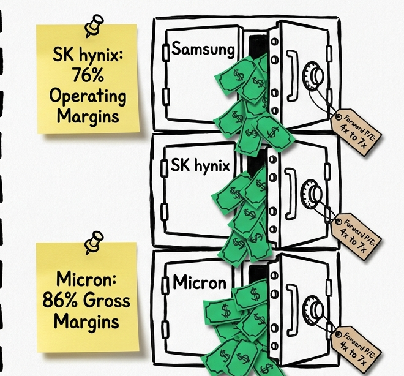

Cold Open
0.000s–58.038s · 18 cues · 0 cadence turns


World plate first; deck surfaces are candidates for small, sequential evidence slots only.
0.000s–58.038s · 18 cues · 0 cadence turns
58.038s–108.182s · 14 cues · 0 cadence turns


108.182s–210.164s · 30 cues · 3 cadence turns


210.164s–288.344s · 23 cues · 3 cadence turns


288.344s–410.260s · 36 cues · 4 cadence turns



410.260s–530.957s · 35 cues · 1 cadence turns


530.957s–570.082s · 12 cues · 1 cadence turns


570.082s–667.988s · 29 cues · 1 cadence turns

667.988s–794.235s · 37 cues · 1 cadence turns


794.235s–910.150s · 35 cues · 5 cadence turns


910.150s–980.806s · 21 cues · 0 cadence turns